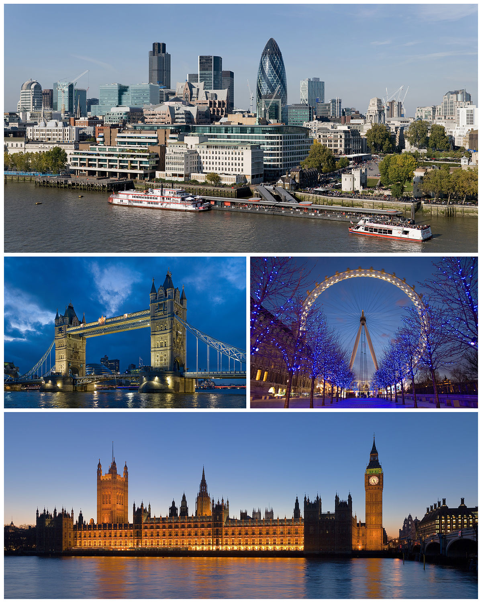

Lista ordonata
3 Carti bune de citit
- O MIE NOUĂ SUTE OPTZECI ȘI PATRU de George Orwell.
- MICUL PRINȚ de Antoine de Saint-Exupery
- BĂTRÂNUL ȘI MAREA de Ernest Hemingway
===================================================================================================================================================================================================================
Lista neordonate
3 Filme bune de privit
- Kingsman: The Secret Service

- The Adam Project
- Red Notice

===================================================================================================================================================================================================================
Lista de difinitie
3 Locuri bune de vizitat
- Londra
- este capitala Angliei și a Regatului Unit. Este cel mai important centru politic, financiar, cultural și
artistic al Regatului Unit, și unul dintre cele mai importante orașe ale lumii.

- Paris
- este capitala și cel mai mare oraș din Franța. Orașul este traversat de fluviul Sena, în nordul Franței, în
mijlocul regiunii Île-de-France . Orașul în limitele sale administrative
este în mare parte neschimbat din anul 1860, având o populație de 2.211.29 locuitori
- Los Angeles
- cunoscut ca L.A. ori în mod colocvial [the] „City of Angels” (Orașul Îngerilor), este cel mai mare oraș din
statul California și al doilea ca mărime a populației din Statele Unite ale Americii, fiind întrecut doar de
New York City. Populația este estimată la 4 milioane de locuitori.Los Angeles este centrul cultural,
financiar și comercial al sudului Californiei. Orașul este recunoscut pentru climatul mediteraneean,
diversitatea etnică și industria cinematografică și cea a divertismentului, fiind o metropolă în continuă
expansiune.